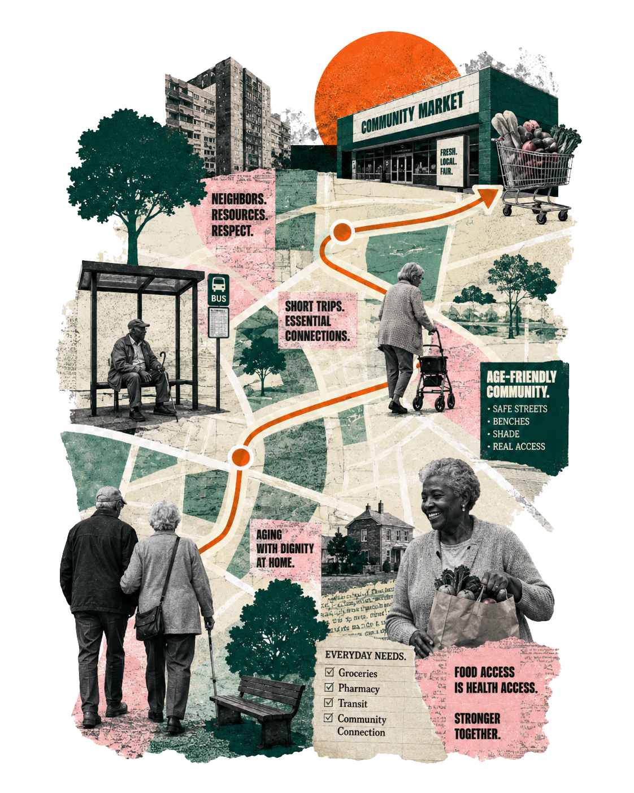

Chapter 01 / Theoretical Background
Store Next Door
A low-pressure shopping field begins in everyday life.
Ageing economy
Community supermarket
Service design management
Low-pressure shopping field

Everyday Service Field
01
Social Background
Ageing Is Already Here
It is shaping everyday routes, access, and the way residents reach daily services.

Home
Access
Community Market
Everyday Frictions
Small Frictions Add Up
Shopping pressure often appears through ordinary details, not dramatic barriers.

small type
unclear prices
long walking distance
slow decision-making
service anxiety
Service Node
More Than A Store
A community supermarket can gather daily needs, health routines, trust, and support into one low-pressure field.

access
comfort
clarity
trust
dignity